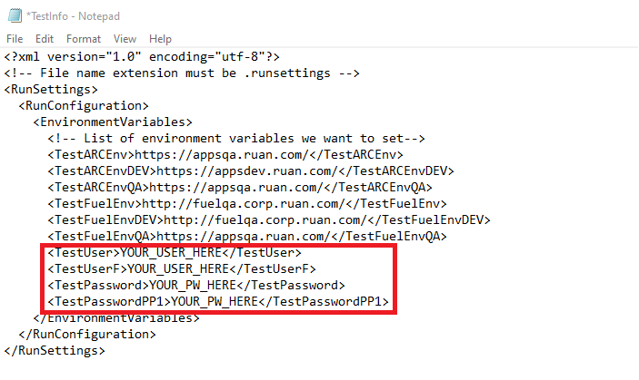
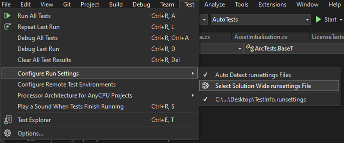

The automation scripts rely on a runsettings file for its configuration

Change the variables as needed.
In order to reference the runsettings file, you must locate and select it through the UI in Visual Studio.

Changing Testing Environments
To change the testing environment, change the testingURL in the BaseT.cs file under the testing solution. TestARCEnvDEV for the DEV/TST environment and TestARCEnvQA for the QA/TRN environment.